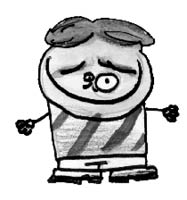

Ernst Kretschmer (1888-1964)
Alman nöroloji ve psikiyatri uzmanı. Teoloji, tıp ve felsefe okudu. Fizik ve Karakter adlı kitabını henüz otuz üç yaşındayken yazdı. Kitabında, birtakım akıl hastalıklarıyla kişinin beden yapısı arasında bir ilişki olduğunu savunuyordu.
Piknik tip: Orta boylu, geniş gövdeli, yuvarlak hatlı, yağlanma eğilimi gösteren bir beden yapısına sahip bu tipler iradeleri güçsüz, başladıkları işi sonlandıramayan, kolay duygulanıp bunu yansıtan ama aynı zamanda canlı, neşeli, dışa dönük, insancıl tiplerdir. Orta yaşlardaki piknik tipte mani-depresif vakaların sıklıkla görülmesi önemlidir. Piknikler suçlular arasında genel nüfusta en az temsil edilenlerdir.

Astenik tip: İnce, uzun boylu, göğüs ve karın bölgesi iyi gelişmemiş olan bu tipler içe dönük, çekingen ve soğukkanlıdırlar. Astenik tipler, hırsızlık ve dolandırıcılık suçlarında öne çıkarlar.
Atletik tip: Uzun boylu, güçlü, geniş omuzlu, kalın kemikli olan bu tipler ise yarışmayı seven gürültücü kişiliklerdir. Atletikler, şiddet suçlarında ağırlıklıdırlar.
Kretschmer daha sonra bunlara ek olarak anormallik belirtisi gösteren insanların toplandığı disfazik tipi de eklemiştir.
Alman psikiyatri ekolünü oldukça etkileyen bir psikologdur kendisi.